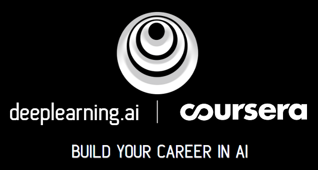
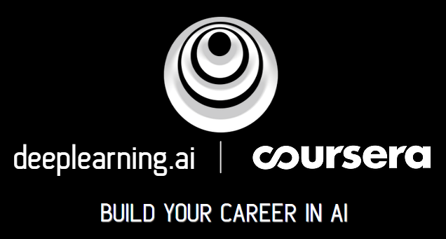

-
- Basic info.
- Personal information: hongYuXie / Female
- Graduate School: Northeastern University(2010-2014)
- Major: Computer Science And Technology
- Nature of University: The first batch of 985, 211 national key construction of colleges and universities directly under the ministry of education
- Work Seniority: 5 years+[Actual 4years+,redundant is working overtime to add, I believe you know!]
- Hobby: Science Fiction Movies, Reasoning Movies,Geek conferences,Balls Game
- Linkedin: www.linkedin.com
- CSDN_Blog: blog.csdn.net/loverain90
- GitHub: github.com/hongyuXie
-
- Skills.
-
Overview

.svg?q=306)


 

-
- Experience.
Individual Projects
-
Personal blog - AI [Now only contains: Machine Learning] 源代码
Brief Introduction Machine learning is the study under the condition of non specific programming to computer the discipline action. In recent twenty years, machine learning bring us the self-driving cars, practical speech recognition, Effective web search, let us to the understanding of the human genome ability is greatly increased. Today's Machines Learning technology has become so common that you are likely to be under the condition of no notice using dozens of times a day. This project covers of machine learning, data mining and statistical pattern recognition.Related topics include: (I) supervised learning (parameter and nonparametric algorithm, support vector machine, kernel function and neural network). (ii) unsupervised learning (cluster, dimension reduction, recommendation system, and deep learning). (iii) machine learning instance (bias/variance theory;Machine learning and innovation in the field of AI). Using a learning algorithm in different areas, such as intelligent robot (perception and control), text comprehension (web search and filtering spam), audio, computer vision, medical informatics, database mining and other fields.
Certificate Authentication:
Contains:
- Linear Regression
- Logistic Regression
- Neural Networks
- Support Vector Machines
- K-means Clustering K-means
- Principal Components
- Analysis
- Anomaly Detection
- Collaborative Filtering
- Object Recognition
- Matlab
- Octave
The original first:Personal love of artificial intelligence;Love all kinds of science fiction movies, and think that only unexpected, no can't do;Science eventually will be out of the screen, become a reality.
Then later: With Andrew Ng of tsinghua university once, ever planted a seed.Then, based on personal worship of Andrew Ng, didn't graduate that year, baidu in tsinghua university recruitment preaching and written examination, and from now on, pay special attention to the field of artificial intelligenceInadvertently, found that Andrew Ng originally ever created MOOC platform, began the self-study machine learning way.
Now now:After a year of insist, finally completion of Andrew Ng in Coursera courses.And obtain qualification certificates, then invited to join the Coursera Data Science Community.
After the later:Continue to follow Andrew Ng learning, Ng from baidu after departure, foundeddeeplearning.ai to let people all over the world through self-study courses, to become experts in the field of AI.
-
My Resume(CN)
- GitHub Project Linked:MyResume_CN.git
- GitHub:MyResume_CN
About: This is a personal online resume in Chinese, in order to real-time update personal profile, once and for all, especially the online resume.Later will open a new branch in the lot, do your resume in both English and Chinese.Welcome to star.
-
My Resume(EN)
- GitHub Project Linked:MyResume_EN.git
- GitHub:MyResume_EN
About: This is a personal online resume in English, in order to real-time update personal profile, once and for all, especially the online resume.Later will open a new branch in the lot, do your resume in both English and Chinese.Welcome to star.
About Machine learning--StartAbout Machine learning--StartOther Projects--StartOther Projects--End Venus(2015.11 - Now)
Venus(2015.11 - Now)-
Product-Syslog Automatic Normalize System
About: Syslog is a kind of widely used in log system, SOC as log collection and analysis system, need to collect and analysis from all kinds of different systems and equipment.But most of the system is not completely obey the syslog format standard, and have kinds of the system itself defined by the log format.This makes SOC in the acquisition of log parsing and extracting the required fields (calls Normalize), can't afford to compatible with log format.The current solution is to adopt the method of artificial. Write a regular expression to log format for adaptation of different systems and devices.The current solution is to adopt the method of artificial write a regular expression to log format for adaptation of different systems and devices. This method has some disadvantages exist, when the user in the environment of log device for version upgrade log format added a new adjustment or not after identification of equipment, will make the current SOC regular expression on the interpretation of logging function failure, this is where the front line technical personnel on-site regular expressions can parse new log format, however, because the front technology personnel to the difference of personal technology combined with the SOC, as defined by the understanding of the different fields and user logs, will make more errors when write a regular expression and parsing is not accurate, so you need to design a can without human intervention or under the condition of a small amount of manual intervention, complete the did not identify the log format for automatic analysis and recognition methods, to increase the compatibility of the different log SOC and adaptation ability.
Responsibility:
- (0) Machine Learning research
- (1) Design scheme Machine Learning research and try
-
Product-Syslog Collector
About: For different application, through authorization, can adopt different ways of collecting, at the same time, to the deployed system, should be able to constantly add new developed way of collect, so the plug-in model also was born.In the collector (or clollector module), each kind of collect method is defined as a plug-in, this plugin in your own code control to realize the collection of its own functions, and their control plug-in configuration save and read.
Responsibility:The collection plug-in service research and development, now have realized the following main collect plugins are:apache,iis, jdbc(support many databases such as :oracle;sqlserver;mysql;db2 and so on),mysql, oracle,mysql,textfile,textfilepath and so on.
-
Product-Syslog System
About: The system contains 13 primary module, a number of second or three modules.System can real-time collect the enterprises and organizations of different manufacturers of safety equipment, network equipment, host equipment , operating system, as well as a variety of applications generate such as log, events, alarm, and the information collection of data to audit center, for centralized storage, display, query, and audit.In solving security industry products: all kinds of safety products and equipment log data often chaotic, also cannot reflect the relationship between them.So the Syslog System is to solve these problems to build a information exchange, information storage, information processing platform, through this platform, can log on various products, events, unified management and analysis.
Responsibility: At present mainly in charge of rules, audit, warn research and development .Among them, the rules refers to the audit of the premise, the alarm is the result of the audit.The three modules is the core of the syslog audit system.Rules as the most basic components, the conditions of the rule configuration panel using the plug-in design.Real-time collect of syslog logs from the collector forwarded by a mechanism, through the log after normalize form high readability structured data, i.e., the event, in view of the matching rules of certain events will generate alarm inform customers, whether for processing.
Technology Stack:
- Font Stack:Jquery;The framework of Statistical analysis chart views:echarts.
- End Stack:elasticsearch used for fast retrieval,kibana used for analysis and display, nutz framework and so on.
Soft Skills:
- The Prototype Design:Axure RP Pro 7.0
- Design documents:Word2010;Visio2010;Project2010
- Analysis tools:Mindjet
- Schedule planning:Gantt chart
-
Product-SOC Safety Management System
About: Comprehensive management, comprehensive analysis platform.SOC system of safety management on the basis of IT assets, business information system as the core, to the user experience as the guide, from monitoring, auditing, risk, operations the unification of the four dimensions to establish a set of measurable business support platform, make all kinds of users to business information system availability, performance and service level monitoring, event analysis, auditing, early warning and response, and situational risk measurement and evaluation, the standardization, the routine, the security of the normalized process controls, so as to ultimately achieve business information system of continuous safe operation.
Responsibility:Threat intelligence development function, and use elasticsearch support by default script groovy configuration threat information, matching the query, etc.
Technology Stack:Mostly same as above-->Product-Syslog System; Groovy for threat intelligence script matching the query.
Soft Skills:Same as above-->Product-Syslog System
-
Product-Universal product packaging research and development of the virtual machine
About: Packaging, long journey of the last step, how to put the system deployment to the tester or the end user's machine?In order to achieve convenient and rapid deployment to the server, we need to form a product package. This needs a convenient tool, realize the compilation of source code, packaging, for different operating systems, such as Linux is a tar packages, and Windows is an exe executable installation package.
Responsibility: 1, For Windows System:
- (0) automation code compilation, packaging shell script;
- (1) using innosetup to squelch exe, by iss script;
- (2) the iss and bat script do installation interface: according to the installation package to install, need to launch all kinds of services, such as: tomcat, es, db, Java, etc;
- (3) the iss and bat script do uninstall interface: the installation package for, unloading need to empty the installation directory;
- (4) the iss and bat script do memory allocation elasticsearch service interface, on the advice of the es website gives es memory allocation mechanism for reasonable distribution of the JVM memory.
- (0) Same as above;
- (1) Don't need a third party tool, directly to the Linux system tar - CZVF command;
Technology Stack:
- linux
- shell
- innosetup(iss)
- bat
- ssh
- xmanager
-
Product-Distributed Correlation Analysis System
About:
Responsibility: Correlation analysis center construction train of thought to separate out correlation analysis center in southern power grid project, thus reduce the system to the CPU consumption, improve product running speed.Correlation analysis center will be the future bearing SOC management platform of event rules alarm analysis center, implement event analysis independently distributed processing construction goal.
Technology Stack:Message middleware service:Kafka,RocketMQ,Redis and so on(during discussion);Data repeater
-
Customization project-Custom Bigdata Syslog System
About: Aimed at the general administration of customs and subordinate customs, general administration of customs to get the sub department of the customs the alarm information, at the same time in accordance with the need of concurrent warning message prompt, etc.As a result, the customs general administration of customs and the department adopts cascade approach to management and view, at the same time for agency customs concurrent events, need an event completion, in order to understand the son department customs center health health, etc.
Responsibility:
- Concurrent alarms
- Event completion
Technology Stack:
- Same as above-->Product-Syslog System
- Concurrent alarms:webservice
- Cascade
-
Customization project-Secret-Related Syslog Audit System
About: For Syslog Audit System to apply confidential qualification, other inconvenience.
Responsibility:Aerial Remote Data Distribution System
- (0) Syslog Audit System confidential functios development
- (1) Secrecy qualification application tracking
Technology Stack:Same as above-->Product-Syslog System
Machine learning related--StartMachine learning related--EndJava Web related--Start 航天宏图(2014.4 - 2015.10)
航天宏图(2014.4 - 2015.10)-
Customization project-Aerial Center Data Distribution System
About:
- (0) Data Query Module: implement user on the remote sensing image products, special products and other relevant data retrieval
- (1) Portal Service Module： in this system provides the functions of news release, product introduction, tools download function, information sharing function
- (2) Orders Management: to implement users of existing orders, processing orders, again a data requirements, regulatory requirements, order management, including order query, order status tracking and statistical analysis, order, order cancellation content modification and deletion, and other functions
- (3) Data Synchronization: synchronization based data support platform data to the database information sharing and service system;Implementation will Intranet after screening of metadata and quick view data synchronization to the function of network system;Intranet export product orders, orders for the network to import the data to support
Responsibility: Development and maintenance of order management module
Technology Stack: Font Stack:
- DWR Framework
- The framework of statistical and analysis chart view:highcharts
- The basic development environment:jdk1.6+tomcat6.0+oracle11g+Arcgis
- SSH Framework
Soft Skills:
- The requirements document to write
- Profile design document writing
- Function interface prototype design:Axure RP Pro 7.0
-
Customization project-Military for Data distribution System and Scheduling System
About: Project contains five subsystems:
- (0) Data Archive Management Subsystem
- (1) Query Retrieval Subsystem
- (2) Product Distribution Subsystem
- (3) Product Customization Service Subsystem
- (4) Application Scheduling Subsystem
Responsibility:
- (0) Product Distribution Subsystem
- (1) Application Scheduling Subsystem
Technology Stack:Same as above-->Customization project-
 Tarena(2013.6 - 2014.4)
Tarena(2013.6 - 2014.4)-
Graduation design-DRP Distribution system design
About:
- My University belonging to 3 + 1 teaching mode, so the senior organization to university-enterprise cooperation company in production practice, during my internship in the production of finished school curriculum design. Production internship through self-study Java Web application development of related technology, complete the graduation design. In the meantime, be within the group, assistant class guide, to students related Java Web development assignment problem.
Responsibility:
- DRP Distribution system design interface prototype design
- Graduation design requirements document writing
- Graduation design profile design documents
- Graduation design function interface prototype design.Axure RP Pro 7.0
- HTML+CSS+JS
Technology stack:
Tarena(2013.6 - 2014.4)
-
Graduation design-DRP Distribution system design
About:
- My University belonging to 3 + 1 teaching mode, so the senior organization to university-enterprise cooperation company in production practice, during my internship in the production of finished school curriculum design. Production internship through self-study Java Web application development of related technology, complete the graduation design. In the meantime, be within the group, assistant class guide, to students related Java Web development assignment problem.
Responsibility:
- DRP Distribution system design interface prototype design
- Graduation design requirements document writing
- Graduation design profile design documents
- Graduation design function interface prototype design.Axure RP Pro 7.0
- HTML+CSS+JS
Technology stack: